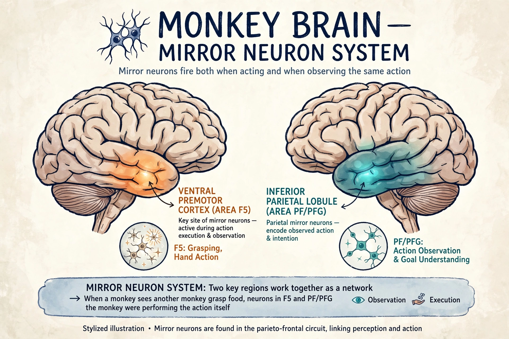

A mirror neuron is a neuron that fires both when an animal acts and when it observes the same action performed by another. First discovered in macaque monkeys in the early 1990s, mirror neurons have been linked to imitation, learning, and social cognition.

| Mirror neuron | |
|---|---|
| Location | Premotor cortex, inferior parietal lobule |
| Discovered | Early 1990s, Parma, Italy |
| Key researchers | Giacomo Rizzolatti, Vittorio Gallese |
Researchers at the University of Parma led by Giacomo Rizzolatti found neurons in macaque area F5 that discharged when the monkey grasped an object and when it watched an experimenter do so.
Brain imaging suggests a human mirror system involving Broca's area and inferior parietal cortex. Its role in empathy, language evolution, and autism (the contested 'broken mirrors' hypothesis) remains debated.
Critics such as Gregory Hickok argue mirror neurons do not by themselves explain action understanding, and direct single-neuron evidence in humans is limited. See also neuron and sympathy.